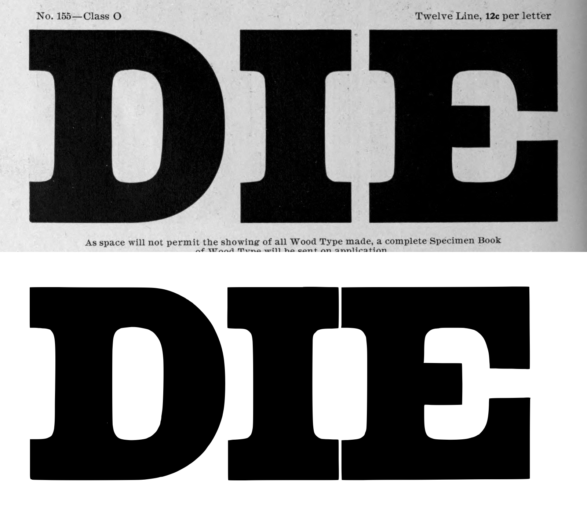
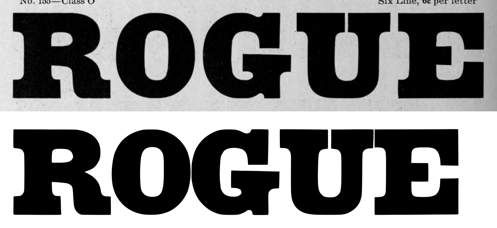
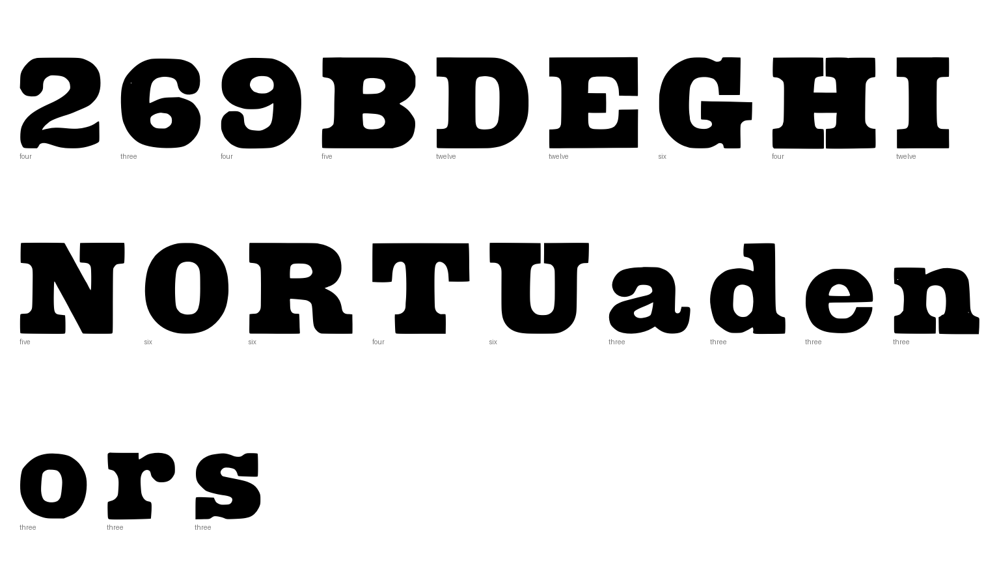
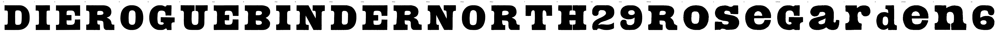

Gray letters are constructed, not traced.


[]
{
"892:twelve": {
"n_caps": 3,
"cap_height_px": 802,
"baseline_px": 3434,
"glyphs": [
"D",
"I",
"E"
],
"stem_px": 237,
"scale": 0.87282,
"stem_units": 206.9
},
"892:six": {
"n_caps": 5,
"cap_height_px": 402,
"baseline_px": 2427,
"glyphs": [
"R",
"O",
"G",
"U",
"E.six"
],
"stem_px": 101,
"scale": 1.74129,
"stem_units": 175.9
},
"892:five": {
"n_caps": 6,
"cap_height_px": 335.0,
"baseline_px": 1819.0,
"glyphs": [
"B",
"I.five",
"N",
"D.five",
"E.five",
"R.five"
],
"stem_px": 104.0,
"scale": 2.08955,
"stem_units": 217.3
},
"892:four": {
"n_caps": 5,
"cap_height_px": 269,
"baseline_px": 1270,
"glyphs": [
"N.four",
"O.four",
"R.four",
"T",
"H",
"two",
"nine"
],
"figure_height_px": 268.5,
"stem_px": 82,
"scale": 2.60223,
"stem_units": 213.4,
"figure_height": 699
},
"892:three": {
"n_caps": 2,
"cap_height_px": 202.0,
"baseline_px": 787.5,
"glyphs": [
"R.three",
"o",
"s",
"e",
"G.three",
"a",
"r",
"d",
"e.three",
"n",
"six"
],
"x_height_px": 148.0,
"figure_height_px": 199,
"stem_px": 62.5,
"scale": 3.46535,
"stem_units": 216.6,
"x_height": 513,
"figure_height": 690
}
}
{
"archive_id": "bookoftypespecim00barnrich",
"title": "Book of type specimens. Comprising a large variety of superior copper-mixed types, rules, borders, galleys, printing presses, electric-welded chases, paper and card cutters, wood goods, book binding machinery etc., together with valuable information to the craft. Specimen book no.9",
"creator": [
"Barnhart, bros. & Spindler, firm, type founders, Chicago",
"De Young family",
"De Young, Charles, 1881-"
],
"publisher": "Chicago, Barnhart bros. & Spindler",
"date": "[1907]",
"ppi": 400,
"url": "https://archive.org/details/bookoftypespecim00barnrich",
"copyright_status": "NOT_IN_COPYRIGHT",
"contributor": "University of California Libraries",
"leaves": [
892
]
}